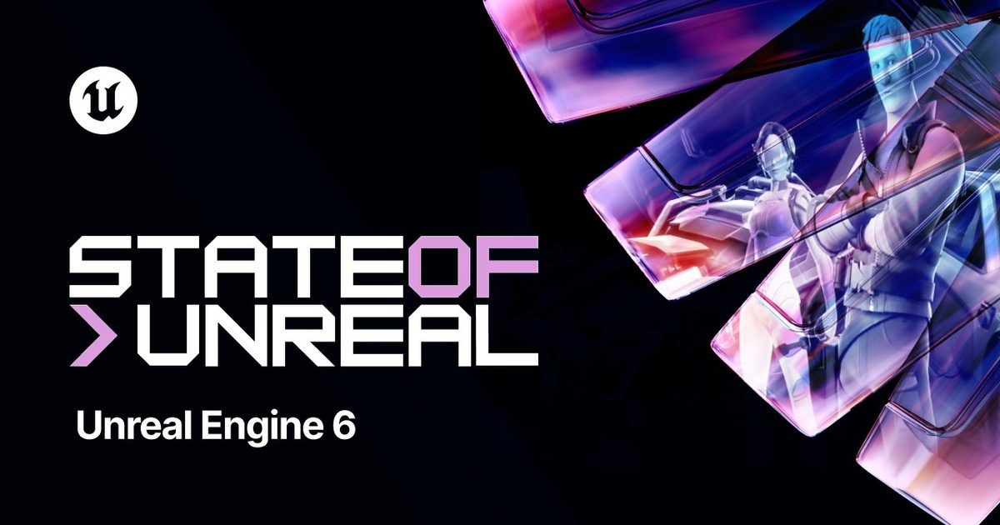

2026-11-24 · 引擎与产业 / 开发工具

这件事被讲成了「AI 太强，所以人不用画节点了」。 但我们把 Epic 自己那篇公告翻来覆去读了三遍，发现因果是反的—— 不是 AI 变强所以砍蓝图，是蓝图这种文件格式让 AI 根本插不上手。 而 Epic 之所以敢砍，靠的是一条每年降 13 倍的成本曲线。 这条曲线是整件事的地基，也是它最薄的地方。
2026 年 6 月 22 日，Epic 发布《The road to Unreal Engine 6》。 那篇公告写得很温和：蓝图与 Actor 会「在 UE6 的早期版本中存在」， 等新的 Scene Graph 框架成熟之后再逐步弃用， 并且会提供转换工具。原话是「bring existing projects along, not to force a hard break」—— 带着现有项目一起走，不做硬切割。
四个月后的 11 月 3 日，东京 Big Sight，Unreal Fest Tokyo 2026 基调演讲。 Tim Sweeney 亲自上台，把这件事改了口：蓝图、Actor、以及传统 C++ Gameplay Framework 在 UE6 里不是「逐步弃用」，是从抢先体验第一天起就不存在。 据现场媒体记录，Sweeney 为这个决定向开发者道了歉， 并留下一句后来被反复引用的话：「It's a painful change. Many developers around the world love Blueprints.」
11 月 20 日，Epic 研发执行副总裁 Marcus Wassmer 在官网补上正式说明， 把理由压缩成一句：「随着近期 AI 能力的进步，我们预计 AI 会极大帮助把 UE5 项目转换到 UE6， 甚至让这个过程完全自动化。」 顺带把交付时间也说死了——UE6 抢先体验仍是 2027 年底，正式版再往后 12 到 18 个月。
所以完整的事实是：五个月内，Epic 推翻了自己写进官方博客的迁移承诺， 并且用「AI 能自动转换」作为唯一的新增论据。 这一点比「砍掉蓝图」本身更值得记下来。 因为砍掉一个工具是技术选择，改掉一个承诺是信用问题——而后者才有复利。
中文报道在这件事上几乎集体漏掉了同一件事：蓝图是怎么存的。
蓝图不是代码文件。它是二进制资产—— 和一张贴图、一个模型一样，被打包成不可直接阅读的二进制块。 这对人类没问题：编辑器帮你把节点还原成屏幕上的连线。 但对大语言模型是致命的：它读不了二进制。 一个 agent 打开你的项目，看见的是一堆 `.uasset`， 它没法「看」这张蓝图，也就没法改、没法查、没法调试。
这就解释了整篇公告里那些看似零散的细节，为什么全部指向同一个方向：
官方说 UE6 会「把更多游戏资产存为文本」，让语言模型可以直接编辑； 对必须保留二进制的资产，Epic 在做一个命令行工具， 让 agent 不用加载整个编辑器界面就能操作这些文件； 官方还提到一个内部项目，名字直白得可笑——「Python All The Things」， 目标是让编辑器里的一切都能被脚本调用。
请注意这三件事的性质：它们都不是「让 AI 更聪明」， 而是「把引擎改造成 AI 能下嘴的形状」。 砍蓝图不是这场改造的结果，是它的前提。 你没法给一个啃不动二进制的东西做迁移工具， 所以只能先宣布那个格式不存在。
这也是为什么 Verse 会被选中。它是一种文本语言—— 2023 年起就在《堡垒之夜》的 UEFN 里跑生产环境， 文件是人可读的纯文本，人和 agent 打开看到的是同一样东西。 换句话说，Verse 赢的不是「更好用」，是「更可被读取」。 在这场选择里，「可被机器读取」这一条权重高过了「对人友好」。
所有报道都在引用这组数字，但很少有人把它拆开算。 官方原文是：两周前，Epic 试着用 AI 把《堡垒之夜》大逃杀模式的全部蓝图转成 Verse。 这个工程原本预计要数年。结果是拿到了一个可运行的原型， 在移植超过 20,000 张蓝图之后，产出约 300 万行 Verse 代码。
先算第一个数：300 万 ÷ 2 万 = 平均每张蓝图 150 行 Verse。
这个比值本身就是信息。一张蓝图在编辑器里可能只是屏幕上十几个节点、 靠继承和接口复用的一大坨逻辑；转成 Verse 之后变成 150 行平铺的代码。 这说明转换是「展开式」的，不是「等价式」的—— 蓝图里折叠起来的宏、事件分发、父子类继承， 在文本里必须被显式写出来。
再算第二个数：300 万行代码，按一个熟练工程师每天有效产出 150–200 行算， 大约是 1.5 万到 2 万人日，折合 40 到 55 人年。 这就是官方说「原本预计要数年」的来源，账是对得上的。
但真正该被注意的，是官方在同一段里紧接着写的那句限定： 「团队正在努力迭代，以验证由此产生的性能、内存占用和架构。」
这句话把「两周搞定」 downgrade 成了「两周生成了一个能跑起来的东西」。 可运行原型和可发布游戏之间，隔着的正是性能、内存、架构这三样—— 而这三样，恰好是 AI 生成代码最容易糊掉、也最难靠 AI 自己验证的部分。 一个 300 万行的代码库如果架构不对，它不是资产，是负债： 后续每一次改动都要在这个体量上做回归。
所以这组数字的真实含义是：Epic 证明了「转换能出东西」， 但还没证明「转换出的东西能长期维护」。 而后者才是开发者真正在担心的那件事。
Wassmer 给出的第一个理由是成本。原话是：任何给定任务的 AI 成本 每年下降 13 倍（他直接引了 epoch.ai 那篇《The plunging price of thought》）， 而「转换一款游戏的复杂度大致保持不变」。 因此等到 UE6 正式版面世时，转换成本会「适中」。
我们把这条曲线代进去算一遍。假设今天转换一个中等规模 UE5 项目的成本是 C。 UE6 抢先体验在 2027 年底，正式版再往后 12 到 18 个月—— 也就是说，真正大规模迁移发生在 2028 年底到 2029 年中，距今约两年到两年半。
按 13 倍/年复利：一年后是 C/13，两年后是 C/169， 两年半后是 C/2200 左右。
这个数字大得几乎不像真的。而它之所以不像真的，是因为它建立在一个被一句话带过的假设上： 「转换的复杂度大致保持不变」。
这个假设有两个问题。
第一，转换复杂度不是常数，它随项目规模和非标准代码比例上升。 《堡垒之夜》是 Epic 自己的项目：代码风格统一、命名规范、 没有十年积累的祖传 hack、没有外包团队塞进来的私货。 一个真实的第三方项目里，最贵的从来不是「把逻辑翻译过去」， 而是「搞清楚这段逻辑当初为什么这么写」。这部分成本不随 token 降价。
第二，验证成本根本不在这条曲线上。 13 倍降的是「生成」的单价，不是「确认生成对了」的单价。 一个 300 万行 Verse 代码库要验证性能、内存、架构， 需要的是跑起来、压测、看 profiler、做长周期回归——这些是人力和机器时间， 和模型降价没有关系。Epic 自己在公告里也只说「modest conversion costs」， 没说「modest validation costs」。
这不是说 Epic 在骗人。他们大概率是对的： 迁移的算术成本确实会掉到可以接受。 但「迁移完还得有人负责它」这件事，被那条漂亮曲线挡在了视野之外。
蓝图在过去十二年里真正的价值，不是「不用写代码」， 而是它在美术/策划和程序之间造出了一个可以站人的台阶。
前 Valve 编剧 Chet Faliszek 在视频里的说法最准确： 蓝图这类工具创造了一种「介于普通和专业之间的技能」—— 它让设计师和美术能在工程师划定的安全边界内， 直接动到很深的东西。拿掉它，这些人只有两条路： 学 Verse，或者学写提示词。而提示词不提供确定性。
这不是情怀问题，是有案例的。 《光与影：33 号远征队》的开发商 Sandfall 公开说过， 那款拿下年度游戏提名的作品大约 95% 是用蓝图构建的。 另一款黑马《Queen's Domain》是两人分工： Eric Berger 管美术与设计，Bradley Boothe 管技术。 据媒体报道，在 Epic 公布这次转向之前，Berger 就已经表示 下一个项目要换引擎；蓝图消息出来之后，他补了一句： 蓝图是那款游戏工作流里「很大的一部分」。
两个人能做出一款年度游戏候选——靠的就是那个台阶。 台阶拆了，剩下的不是「两个人加个 AI」，而是「两个人里有一个必须变成工程师」。
一个可以对照的案例是苹果砍 3.5mm 耳机孔：当年被骂得很惨，后来成了行业标准。 但同一个苹果在 MacBook 上把接口砍光，最后又把接口加回来了。 方向对，不代表节奏对；而节奏错了，买单的是生态里最没有议价权的那批人。 这一次，那批人是中小团队和独立开发者。
中文报道普遍把 Verse 写成「Epic 自研的新语言」。这个描述没错，但漏掉了它真正的两个设计选择。
第一，设计者。Verse 的设计有 Haskell 核心设计者之一 Simon Peyton Jones 参与。 一位做函数式编程理论的人被请来做游戏脚本语言，这个组合本身就说明了取向： Verse 不是给「写起来顺手」优化的，是给「能被形式化验证、能被工具推演」优化的。
第二，内存模型。Verse 采用的是分布式软件事务内存（Distributed STM）模型， 目标是让竞态条件在架构层面不可能发生—— 并发逻辑交给运行时，不交给开发者。
这两点合起来，解释了一件在中文讨论里几乎没人提的事： 为什么 Epic 要在这个时间点做这么大的改动，而不是等 UE7。 因为 UE6 的真正目标是把引擎和 UEFN 合并成一个产品， 而这个产品的核心场景是大规模、长周期、多人在线的持久世界。 在那个场景里，蓝图的继承体系（Actor 的刚性父子链） 和手工管理并发，都是结构性的天花板。
换个说法：这不是一次工具替换，是一次为「世界级联机」重写地基。 砍蓝图只是这次重写里最容易被看见的那一块。 代价也很清楚——为了让地基能承重，先把上面住着的人请出去。
这件事在国内被讨论成「中国团队要遭殃了」。我们认为这个判断需要修正， 因为二次元赛道的主力引擎根本不是虚幻。
先看事实。米哈游的《原神》《崩坏：星穹铁道》《绝区零》都是 Unity； 鹰角的《明日方舟：终末地》是基于深度定制的 Unity 打造—— 这点常被误传成 UE5，实际不是；网易雷火的《无限大》则是在 Unity ECS 框架上定制， 用 PCG 做超大规模城市生成。
真正把产能压在 UE5 上的，是另一批「写实向、跨端、开放世界」的项目： 叠纸的《无限暖暖》是全球首款基于 UE5 的跨端开放世界游戏， 首张地图 400 平方公里，联机状态下要同时呈现 1000 种以上服装组件和 100 种以上颜色， 拿了 2025 年苹果设计大奖「视觉与图像」类别； 完美世界的《异环》用 UE5.6 并整合 DLSS 4； 网易雷火的《归唐》也是 UE5 路线。 腾讯招聘官网上能搜到的 UE5 相关岗位超过一百个。
把这两组放在一起，会得到一个和主流叙事不太一样的结论：
第一，迁移压力对国内头部厂商其实小于欧美中型工作室。 因为中国团队买 UE 的方式普遍是「买引擎 + 深度改」， 逻辑层往往有自研的可视化脚本或纯 C++ 架构， 对原生蓝图工作流的依赖度本来就比欧美独立团队低。
第二，真正的成本不在迁移，在人才定价。 现在这一百多个 UE5 岗位，JD 里写的能力项大量围绕蓝图。 而 2029 年之后，蓝图技能会贬值、Verse 会溢价。 一家公司今天招进来的人，四年后技能结构可能整体错位—— 这笔账没人写进路线图，但它是真实支出。
第三，时点比方向更重要。 UE6 抢先体验 2027 年底、正式版 2028 末到 2029 中。 现在锁在 UE5.6 / 5.8 上的在研项目根本跨不过这条线，也不需要跨。 会被这条线切到的，是下一款立项—— 而立项决策通常发生在 2027 年，也就是抢先体验刚出、工具链最不成熟的时候。 那才是真正的风险窗口。
这个分数不是评「该不该砍蓝图」。技术方向我们认为是成立的—— 二进制资产与 agent 工作流天然不兼容，这一点绕不过去， 拖到 UE7 只会更贵。
扣分扣在三件事：五个月内推翻公开承诺（信任成本）； 用一条线性外推的成本曲线替代了迁移工具的实际交付（工程风险）； 以及对「中间层技能消失」没有给出任何替代方案（生态责任）。 Epic 自己的说法是「在 UE5 上继续支持」，这等于把选择权交回开发者—— 听起来客气，实际上是让生态自己承担分叉的代价。
整篇公告里最强的一句，中文报道几乎没人引： 「UE 5.9 的很多部分是我们用 AI agent 构建的，包括大部分 Web 平台的工作。」
这句话的分量和「我们计划将来用 AI 做迁移」完全不是一个量级。 前者是已交付的事实：一个商业引擎的版本，主体由 agent 参与写成。 后者是承诺。 Epic 把这两件事放在同一篇文章里，读者却只记住了后者—— 这大概是他们希望的效果。
如果你只记一件事，记这个：被淘汰的不是「可视化编程」这个思路， 是「二进制存逻辑」这个实现。
证据是 Epic 没有宣布「以后没有可视化」。 他们宣布的是「逻辑用 Verse 写、场景用 Scene Graph 组织」， 同时把 MCP、Python、文本资产、CLI 工具一层层铺上去。 这套组合的指向非常明确：未来会有人重新做可视化层， 但那一层必须建在文本之上，而不是二进制之上。
所以真正该紧张的不是「不会写代码的人」， 是「只会用某个特定二进制工具、且资产不可导出」的团队。 这条判断对所有引擎都成立，不只虚幻。
把三件事排在一张表上，规律很清楚：
虚幻这次属于哪一类，取决于一件还没发生的事： 2027 年底抢先体验发布时，AI 迁移工具到底能不能用。 能用，就是第二种；不能用，就是第三种。 而 Epic 把这个判断的全部重量，押在了一个 2029 年才需要兑现的承诺上。
官方给的三个数字是 20,000 张蓝图、300 万行 Verse、两周。 我们做了一次换算，用可核对的公开口径而不是感觉：
但同一套算法也能算出生意的另一面：这 300 万行代码如果要长期维护， 按「每 1000 行需要 0.1 个工程师」的行业粗算，光是维持这个代码库就需要约 300 人。 《堡垒之夜》养得起 300 人，一个 30 人的中型工作室养不起。
这就是我们对「AI 让开发变便宜」这句话的保留意见： 它确实让「产出代码」变便宜了，但没有让「拥有一套代码」变便宜。 后者才是工作室真正的成本结构。
把整件事压成三句话：
一、技术判断成立。 逻辑存在二进制里，AI 就读不懂；读不懂，就谈不上 agent 工作流。 这条因果链没有别的出口，Epic 只是选择在 UE6 一次性解决。
二、执行节奏可疑。 用「成本每年降 13 倍」推导「迁移会很便宜」， 中间隔着一个未被验证的假设：转换复杂度恒定、验证成本可以忽略。 Epic 自己的 Fortnite 实验只到「可运行原型」，剩下的性能、内存、架构还在验证。
三、对不同人的影响差得很远。 大型团队有议价权和自研工具链，可以留在 UE5 等窗口； 中型工作室和独立开发者失去的是那个「台阶」，而这个台阶正是过去十年 大量优秀小体量作品得以存在的原因。
至于玩家这一端——这件事离得很远。 2027 年底才有抢先体验，正式版 2029 年中，加上 3A 三到五年的制作周期， 第一批真正意义上的 UE6 游戏，大概要到 2030 年前后。 现在担心「以后游戏都一个味」，为时过早。 更值得盯的是另一件事：下一批《33 号远征队》还有没有可能出现。
信息来源：Unreal Engine 官方博客《An update on Blueprints and the path to UE6》（2026-11-20，Marcus Wassmer）、 《The road to Unreal Engine 6》（2026-06-22）、Unreal Fest Tokyo 2026 基调演讲（2026-11-03）、 以及 Kotaku、PC Gamer、80.lv 等媒体对现场的记录。文中换算与结论为 8bitACG 编辑部推演，非官方数据。